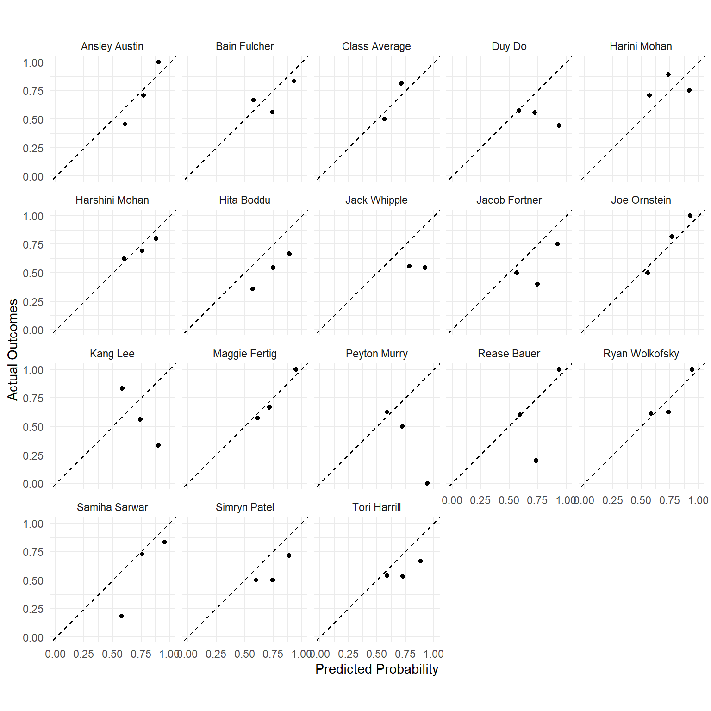

Fall 2023 Predictions
Week 1 (9/6)
Week 2 (9/13)
Week 3 (9/20)
Week 4 (9/27)
Week 5 (10/4)
Week 6 (10/11)
Week 7 (10/18)
Week 8 (10/25)
Week 9 (11/1)
Week 10 (11/8)
Week 11 (11/15)
Leaderboard
| Rank | Name | Correct Calls | Brier Score |
|---|---|---|---|
| 1 | Joe Ornstein | 27/34 | 0.1102 |
| 2 | Harini Mohan | 25/34 | 0.1850 |
| 3 | Ansley Austin | 23/34 | 0.1896 |
| 4 | Class Average | 22/34 | 0.2041 |
| 5 | Harshini Mohan | 22/34 | 0.2111 |
| 6 | Maggie Fertig | 22/34 | 0.2152 |
| 7 | Ryan Wolkofsky | 22/34 | 0.2208 |
| 8 | Samiha Sarwar | 19/34 | 0.2210 |
| 9 | Bain Fulcher | 22/34 | 0.2263 |
| 10 | Simryn Patel | 20/34 | 0.2674 |
| 11 | Tori Harrill | 18/34 | 0.2755 |
| 12 | Rease Bauer | 17/34 | 0.2759 |
| 13 | Jacob Fortner | 18/34 | 0.2787 |
| 14 | Hita Boddu | 15/34 | 0.3126 |
| 15 | Peyton Murry | 16/34 | 0.3638 |
| 16 | Jack Whipple | 17/34 | 0.3857 |
| 17 | Kang Lee | 15/34 | 0.4013 |
| 18 | Duy Do | 13/34 | 0.4599 |
Calibration Plots
